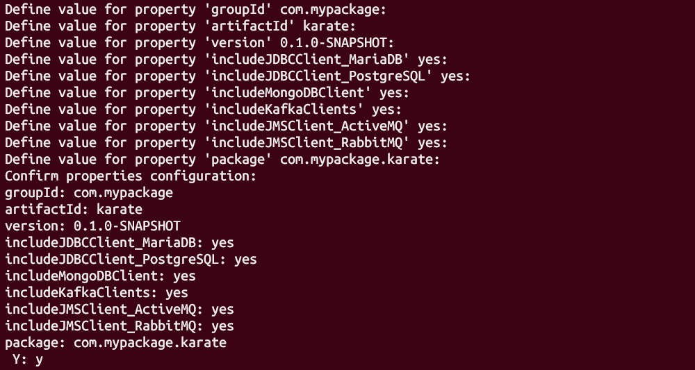
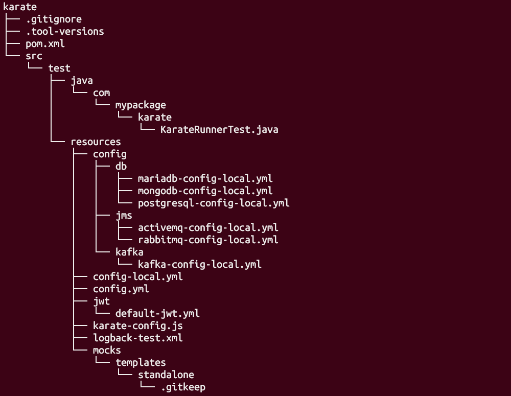

The Karate Tools Archetype generates a karate project from scratch with the necessary configurations and utilities for the generation and execution of karate tests.
1. Note down the target artifact’s group ID, version and main package.
In the artifact’s main pom.xml file, you will find the artifact’s group ID and version for which the Karate tests are to be created.
<groupId>com.mypackage</groupId>
<version>X.X.X</version>In the artifact’s code, you will find the artifact’s main package.
package com.mypackage;2. Create a Karate project using the Karate Tools Archetype
Go to the folder where you want to create the karate project, for example e2e and run the following command:
mvn archetype:generate -DarchetypeGroupId={karatetools-package} -DarchetypeArtifactId=karatetools-archetype -DinteractiveMode=true -DaskForDefaultPropertyValues=true -DarchetypeVersion={karatetools-version}It will prompt for the standard archetype properties:
Define value for property 'groupId' com.mypackage: :
Define value for property 'artifactId' karate: :
Define value for property 'version' 0.1.0-SNAPSHOT: :
Define value for property 'package' com.mypackage.karate: :For the generated karate project we recommend to use:
-
Same group ID as the target artifact.
-
artifact ID:
karate -
Same version as the target artifact.
-
package with the same value as the target artifact with suffix
.karate, for example:com.mypackage.karate
It will prompt (yes/no) for the properties to include sample configuration files for the Karate Clients (JDBC, MongoDB, Kafka and JMS):
-
JDBC
-
includeJDBCClient_MariaDBto include MariaDB JDBC client configuration -
includeJDBCClient_PostgreSQLto include PostgreSQL JDBC client configuration
-
-
MongoDB
-
includeMongoDBClientto include MongoDB configuration
-
-
Kafka
-
includeKafkaClientsto include Kafka configuration(s).
-
-
JMS
-
includeJMSClient_ActiveMQto include ActiveMQ configuration -
includeJMSClient_RabbitMQto include RabbitMQ configuration
-
Define value for property 'includeJDBCClient_MariaDB' yes: :
Define value for property 'includeJDBCClient_PostgreSQL' yes: :
Define value for property 'includeMongoDBClient' yes: :
Define value for property 'includeKafkaClients' yes: :
Define value for property 'includeJMSClient_ActiveMQ' yes: :
Define value for property 'includeJMSClient_RabbitMQ' yes: :
For a client not to be included type n or no, if it’s left empty it takes the default value.
|
This will automatically create the karate artifact folder structure, the test runner, the configuration and support files.

<groupId>com.mypackage</groupId>
<artifactId>karate</artifactId>
<version>X.X.X</version>package com.mypackage.karate;3. Review Karate project structure

-
Tools version manager file:
-
.tool-versions
-
-
Git Ignore file:
-
.gitingore
-
-
Karate pom file:
-
pom.xml
-
-
Java Test Runner:
-
src/test/java/com/mypackage/karate/KarateRunnerTest.java
-
-
Configuration Files (general and environment specific):
-
src/test/resources/config.yml
-
src/test/resources/config-<env>.yml
-
-
Karate-config files:
-
src/test/resources/karate-config.js
-
-
Karate Authentication Default JWT:
-
src/test/resources/jwt/default-jwt.yml
-
-
logback configuration:
-
src/test/resources/logback-test.xml
-
-
karate clients configuration files as per archetype properties (includeJDBCClient_MariaDB, …)
-
src/test/resources/config/db
-
src/test/resources/config/jms
-
src/test/resources/config/kafka
-
-
karate mocks folder to define standalone mock templates
-
src/test/resources/mocks/templates/standalone
-
4. Configure the artifact to include the karate module in the release versioning process
| These steps are to be performed at the target artifact main pom level, not at karate level. |
-
Main artifact
pom.xml<modules> ... <!-- Module to create the karate release only --> <module>karate-release</module> </modules> -
karate-release/pom.xmlThe workingDirectory defined in the plugins pom, must point to the relative path to the karate module, for example: <workingDirectory>../../e2e/karate</workingDirectory><?xml version="1.0" encoding="UTF-8"?> <project xmlns="http://maven.apache.org/POM/4.0.0" xmlns:xsi="http://www.w3.org/2001/XMLSchema-instance" xsi:schemaLocation="http://maven.apache.org/POM/4.0.0 http://maven.apache.org/xsd/maven-4.0.0.xsd"> <modelVersion>4.0.0</modelVersion> <parent> <groupId>TO_BE_COMPLETED</groupId> <artifactId>TO_BE_COMPLETED</artifactId> <version>TO_BE_COMPLETED</version> <relativePath>..</relativePath> </parent> <artifactId>karate-release</artifactId> <packaging>pom</packaging> <name>${project.groupId}:${project.artifactId}</name> <description /> <properties> <exec-maven-plugin.version>3.1.0</exec-maven-plugin.version> <maven-scm-plugin.version>2.2.1</maven-scm-plugin.version> </properties> <build> <plugins> <plugin> <groupId>org.codehaus.mojo</groupId> <artifactId>exec-maven-plugin</artifactId> <version>${exec-maven-plugin.version}</version> <executions> <execution> <id>sync-karate-version</id> <goals> <goal>exec</goal> </goals> <configuration> <executable>mvn</executable> <workingDirectory>../../e2e/karate</workingDirectory> <arguments> <argument>versions:set</argument> <argument>-DnewVersion=${project.version}</argument> </arguments> </configuration> </execution> </executions> </plugin> <plugin> <groupId>org.apache.maven.plugins</groupId> <artifactId>maven-scm-plugin</artifactId> <version>${maven-scm-plugin.version}</version> <executions> <execution> <id>sync-karate-version</id> <phase>default-cli</phase> <goals> <goal>add</goal> </goals> <configuration> <workingDirectory>../../e2e/karate</workingDirectory> <includes>pom.xml</includes> </configuration> </execution> </executions> </plugin> </plugins> </build> <profiles> <!-- Synchronizes karate versions with POM version --> <profile> <id>release-prepare</id> <build> <plugins> <plugin> <groupId>org.apache.maven.plugins</groupId> <artifactId>maven-scm-plugin</artifactId> <executions> <execution> <id>sync-karate-version</id> <phase>process-sources</phase> </execution> </executions> </plugin> <plugin> <groupId>org.codehaus.mojo</groupId> <artifactId>exec-maven-plugin</artifactId> <executions> <execution> <id>sync-karate-version</id> <phase>initialize</phase> </execution> </executions> </plugin> </plugins> </build> </profile> </profiles> </project> -
Update the
maven-release-pluginplugin in the main pom to execute the karate versioning<build> <plugins> <plugin> <groupId>org.apache.maven.plugins</groupId> <artifactId>maven-release-plugin</artifactId> ... <configuration> ... <!-- Karate release --> <preparationGoals>-Prelease-prepare clean verify</preparationGoals> <completionGoals>-pl karate-release exec:exec@sync-karate-version scm:add@sync-karate-version</completionGoals> </configuration> </plugin> </plugins> </build>